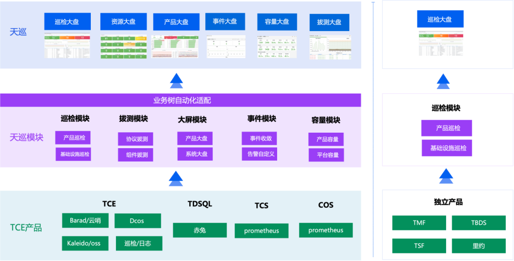
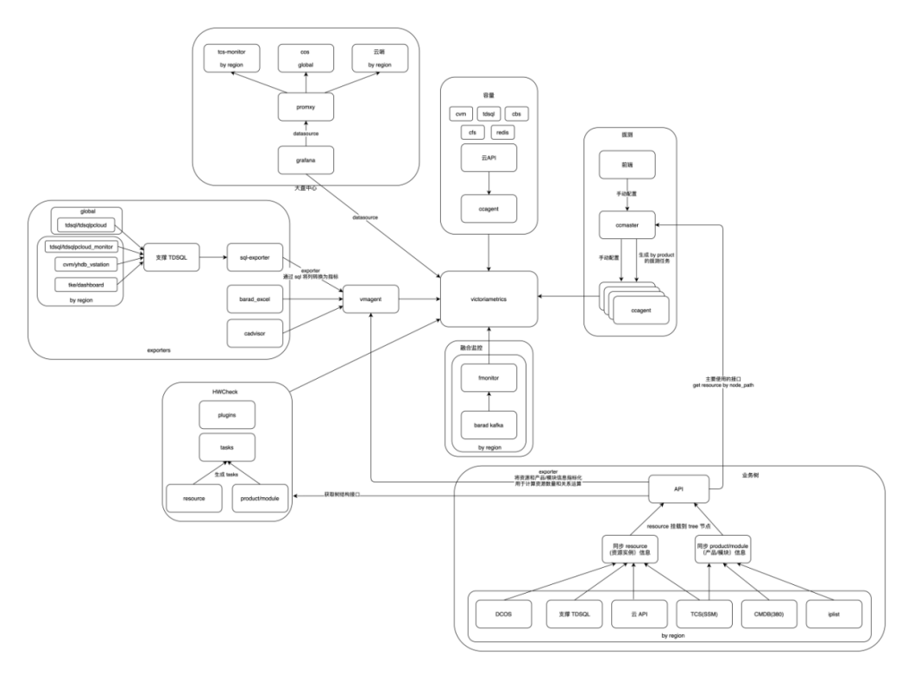
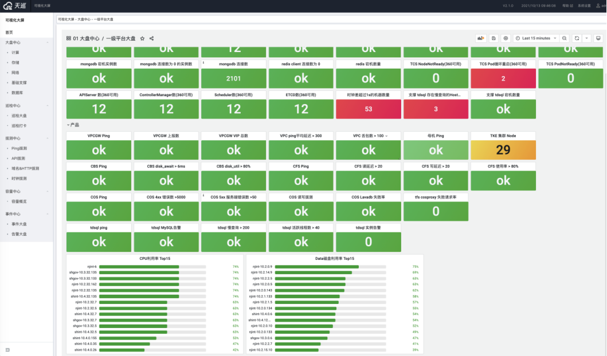
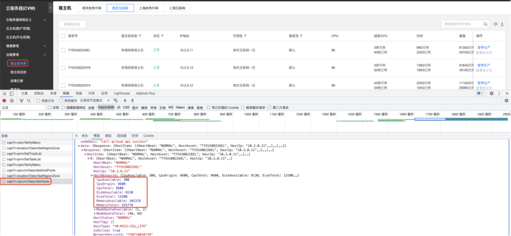
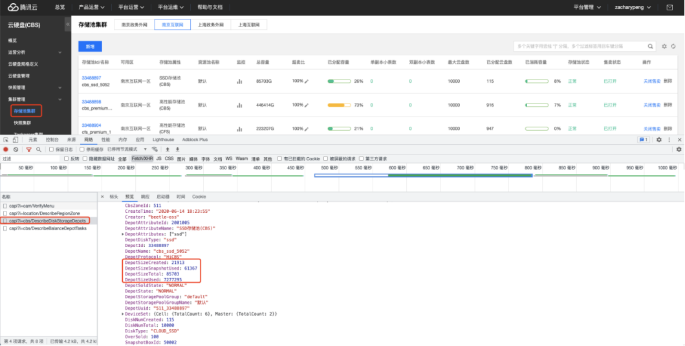
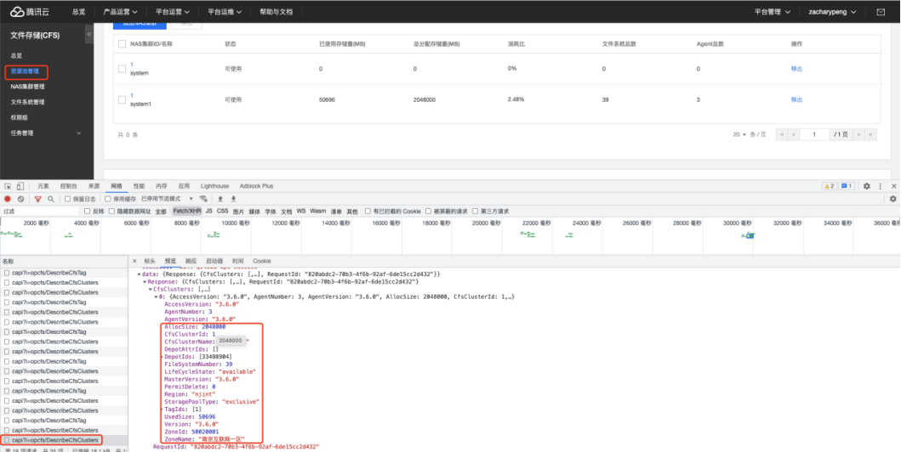
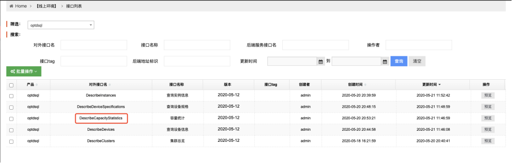
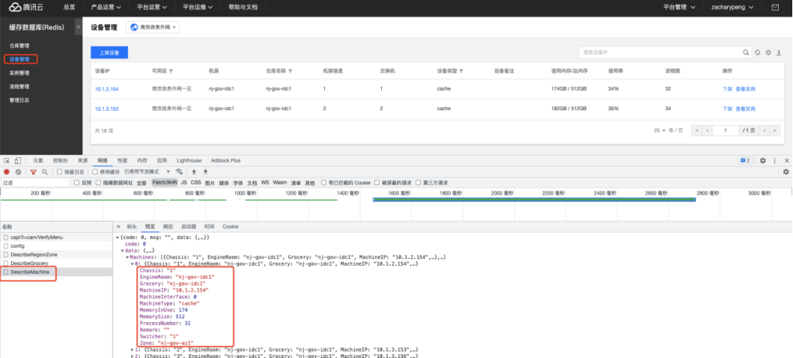
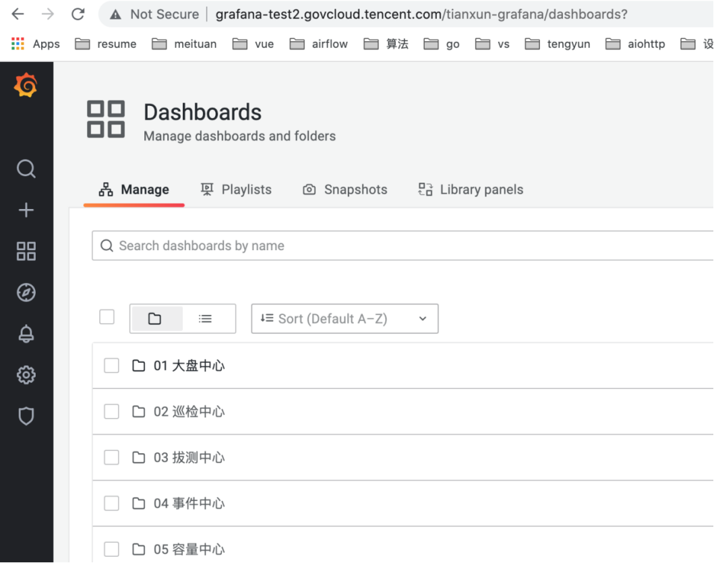
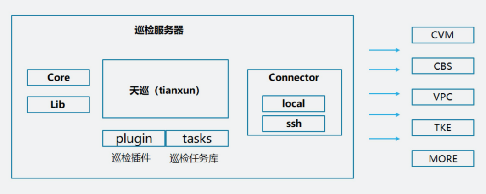

天巡系列文章-系统总体介绍


l 大屏中心
以产品为基准，结合客户场景绘制出黄金指标大盘，通过同步Barad，集成TCS/COS/云哨等数据，并结合巡检及拔测数据绘制出计算/网络/存储/云平台/底层支撑等大盘，方便一线、驻场快速判断平台的稳定性、可靠性。
l 巡检中心
一键式健康巡检框架通过插件机制将各种监控项以插件方式进行管理，并抽取了巡检项的共性，减少代码冗余度。实现快速检测平台的 系统层、应用层、网络层、业务层的健康状态。并提供巡检大屏、EXCEL多种形式对异常进行定位。
l 拔测中心
支持TCP/HTTP/ICMP/NTP/DNS等多种协议拔测，默认集成大层云平台拔测功能，同时提供租户端拔测云平台存储产品的可 一键式健康巡检框架通过插件机制将各种监控项以插件方式进行管理，并抽取了巡检项的共性，减少代码冗余度。实现快速检测平台的 系统层、应用层、网络层、业务层的健康状态。并提供巡检大屏、EXCEL多种形式对异常进行定位。用性探测。用户可以通过后台添加拔测任务，以满足不同场景需求。
l 事件中心
将Barad告警，天巡各模块异常数据进行聚合，并对数据进行收敛，通过Barad-amp 模块进行告警，一线与驻场可在运营端进行订阅，接收告警。
l 容量中心
通过对天巡数据进行分析提炼，展示云平台的容量。

➜ components git:(master) ✗ tree .
.
├── system-btree
│ ├── control.sh
│ ├── docker-compose.yml
│ └── etc
│ ├── Jid.info
│ ├── api-template.sample.yaml
│ ├── config.example.yaml
│ ├── config.yaml
│ └── setup.yaml
├── system-capacity
│ ├── control.sh
│ ├── docker-compose.yml
│ └── etc
│ └── config.sample.toml
├── system-ccagent
│ ├── control.sh
│ └── docker-compose.yml
├── system-ccmaster
│ ├── control.sh
│ ├── docker-compose.yml
│ ├── etc
│ │ └── api_config.yml
│ └── mongo-load-json
│ ├── init-clear.sh
│ ├── init-export.sh
│ ├── init-import.sample.sh
│ ├── json
│ │ ├── domain.json
│ │ ├── node.json
│ │ ├── point.json
│ │ └── task.json
│ ├── mongo-tools
│ │ ├── mongoexport
│ │ └── mongoimport
│ ├── mongo-tools_arm
│ │ ├── mongoexport
│ │ └── mongoimport
│ ├── readme.md
│ └── src-json
│ ├── domain.json
│ ├── node.json
│ ├── point.json
│ └── task.json
├── system-dashboard
│ ├── control.sh
│ ├── docker-compose.yml
│ └── etc
│ ├── config.sample.yaml
│ └── config.yaml
├── system-ehub
│ ├── README.md
│ └── control.sh
├── system-fmonitor
│ ├── control.sh
│ ├── docker-compose.sample.yml
│ └── etc
│ └── config.sample.yaml
├── system-grafana
│ ├── control.sh
│ ├── datasource.sample.yml
│ ├── docker-compose.sample.yml
│ └── etc
│ ├── grafana.db
│ ├── grafana.ini
│ └── provisioning
│ ├── dashboards
│ │ └── dashboard.yml
│ └── datasources
│ └── datasource.yml
├── system-hwcheck
│ ├── control.sh
│ ├── docker-compose.sample.yml
│ └── etc
│ └── config.sample.yaml
├── system-mongo
│ ├── control.sh
│ └── docker-compose.yml
├── system-portal
│ ├── control.sh
│ ├── docker-compose.yml
│ └── etc
│ ├── config.sample.yml
│ └── config.yml
├── system-sql-exporter
│ ├── control.sh
│ ├── docker-compose.yml
│ └── etc
│ ├── collectors
│ │ ├── collector_cvm.collector.yml
│ │ ├── collector_tdsql.collector.yml
│ │ ├── collector_tdsql_capacity.collector.yml
│ │ └── collector_tke.collector.yml
│ ├── config.sample.yml
│ └── sql_exporter.yml
├── system-vm
│ ├── control.sh
│ ├── docker-compose.yml
│ └── etc
│ ├── prometheus.sample.yml
│ └── prometheus.yml
├── system-vmagent
│ ├── control.sh
│ ├── docker-compose.yml
│ └── etc
│ ├── prometheus.sample.yml
│ └── prometheus.yml
└── system-vmalert
├── control.sh
├── docker-compose.yml
└── etc
└── hw.rules
业务树是天巡项目的子组件，通过解析初始化配置信息，业务树组件能够自动同步业务信息，并保存至 mongodb。同时提供 API 为前端及其他后台组件（如巡检、拨测等）提供业务数据。同时业务树还会作为 exporter 提供 Prometheus 格式的指标，将业务信息以指标的形式暴露。
相关负责人：p_pyyxiang，luminizehe
1. 容量目前覆盖五个产品，分别是 CVM 母机，CBS 存储池，CFS，Redis 和 TDSQL，数据来源是各个业务的 API。CVM，CBS，CFS，TDSQL 走了云 API，Redis 的 Describe Machine 接口没有注册到云 API，是直接访问的
2. CVM
数据来源

指标列表
cvm_cpu_available，cvm_cpu_total，cvm_memory_available, cvm_memory_total
3. CBS 存储池
数据来源

指标列表
cbs_depot_size_used， cbs_depot_size_created，cbs_depot_size_total
4. CFS 集群

指标列表
cfs_cluster_used_size，cfs_cluster_alloc_size
5. TDSQL

指标列表
tdsql_cpu_total， tdsql_cpu_free, tdsql_memory_total, tdsql_memory_free, tdsql_data_disk_total, tdsql_data_disk_free
注意，只有 chitu 镜像版本在 1.2.6-20210311-151654-22fadc9 以上才有这个接口，如果 tdsql 没有数据可以检查下是否是 chitu 版本的问题
6. Redis

redis_machine_memory_in_use， redis_machine_memory_size
7. 常见问题解决思路
如果容量大盘看不到数据，可以看容量容器的日志
docker logs $(docker ps | grep capacity | awk '{print $1}')
如果解析不到域名，需要在 system-capacity/docker-compose.yml 中增加 extra_host
telegraf 文档介绍：https://github.com/influxdata/telegraf
以telegraf为基准，针对不同的检测方式启动相关容器
ccagent 相关docker-compose.yml文件内容如下
version: "3.5"
networks:
default:
external:
name: tianxun
services:
redis_collector:
image: csighub.tencentyun.com/tianxun/tianxun-ccagent:${CCAGENT_VERSION}
command:
- "/telegraf"
- --config=http://ccmaster:8081/tcc/api/v1/dial/point/configuration?ip=redis_collector
restart: always
es_collector:
image: csighub.tencentyun.com/tianxun/tianxun-ccagent:${CCAGENT_VERSION}
command:
- "/telegraf"
- --config=http://ccmaster:8081/tcc/api/v1/dial/point/configuration?ip=es_collector
restart: always
mongodb_collector:
image: csighub.tencentyun.com/tianxun/tianxun-ccagent:${CCAGENT_VERSION}
command:
- "/telegraf"
- --config=http://ccmaster:8081/tcc/api/v1/dial/point/configuration?ip=mongodb_collector
restart: always
相关负责人：acemei
提供天巡界面菜单接口，以及为ccagent提供相关telegraf 相关URL接口
相关负责人：acemei，zacharypeng
相当于protal后端，提供对应的API接口
相关负责人：v_vxhtang
事件中心，兼容运营端统一告警平台（AMP）,天巡相关告警配置都是通过这个模块发送
相关负责人：kevisong
1. 获取barad相关Kafka通道信息
2. 消费Barad_Comm topic信息
3. 将上一步消费信息存储到victoriametrics中
相关负责人：acemei
以grafana页面为基座，修改部分源码 适应天巡页面前端，默认开发3000 端口

相关负责人：acemei
巡检框架通过插件机制将各种监控项以插件方式进行管理，插件库开发支持自定义 Python、自定义监控项，动态加载，并抽取了巡检项的共性，减少代码冗余度，基于SSH实现快速检测客户网络层、系统层、应用层、数据库、中间件、安全层以及硬件层等健康状态
具体相关文档地址：http://tianxun-hwcheck.pages.oa.com/_book/index.html

相关负责人：p_xuming，p_pjmzhu（朱俊明）
mongodb相关容器，主要存储业务树相关数据，作为后端数据存储使用
天巡前端页面主要框架，主要提供登录以及后台系统设置等功能
相关负责人：v_vxhtang
使用开源工具sql-exporter,相关文档地址：https://github.com/free/sql_exporter
功能：从赤兔/cvm等相关数据库信息获取相关信息，最终将监控指标放入VM中
相关负责人：p_xuming，zacharypeng
时序数据库victoriametrics,相关文档地址：https://github.com/VictoriaMetrics/VictoriaMetrics
兼容prometheus语法，收集自定义exporter，相关文档地址：https://docs.victoriametrics.com/vmagent.html，相关配置文件如下：
global:
scrape_interval: 10s
evaluation_interval: 1s
scrape_configs:
- job_name: 'vmagent'
static_configs:
- targets: ['vmagent:8429']
- job_name: 'victoriametrics'
static_configs:
- targets: ['victoriametrics:8428']
- job_name: 'tianxun-self-monitor'
metrics_path: /metrics
static_configs:
- targets: [ "self_cadvisor:8080" ]
兼容prometheus语法，主要功能与prometheus recording rule类似，相关文档地址：https://docs.victoriametrics.com/vmalert.html，主要解决巡检数据单条grafana query超过30W问题